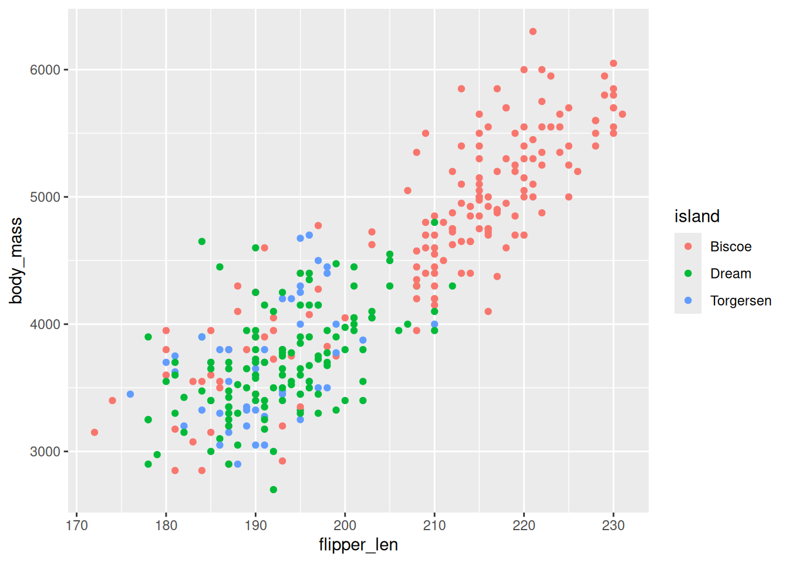
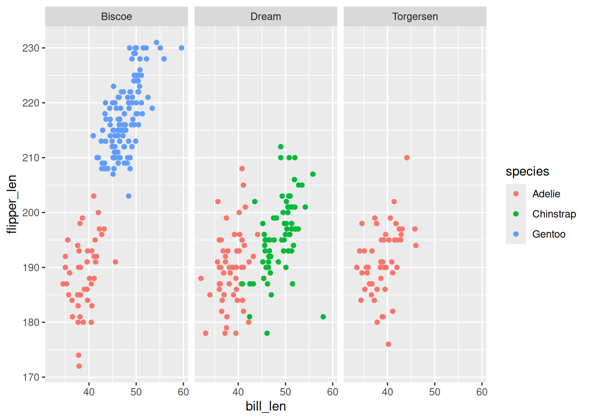
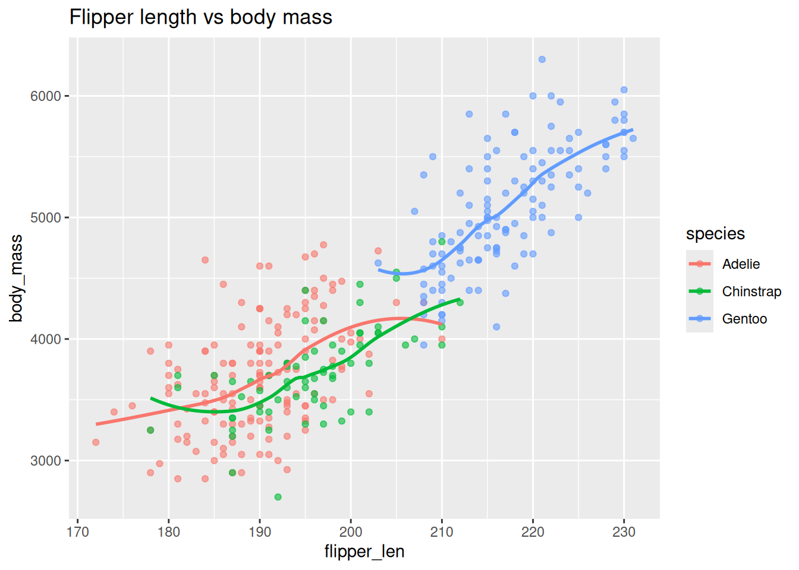

library(dplyr) # Data manipulation
library(ggplot2) # Figures
head(penguins)4 Visualisation with ggplot2
This chapter introduces the ggplot2 package for building layered graphics. You will learn how to map variables to aesthetics, add new layers, and customise the overall look of your plots. We will cover how to:
- Build a basic scatter plot using
ggplot() - Encode additional variables with colour and faceting
- Add statistical summaries and adjust labels for readability
Note
This section assumes:
- you have the
ggplot2package loaded in your current session usinglibrary(ggplot2)orlibrary(tidyverse) - your data are in tidy format with one row per observation and one column per variable
We continue working with the penguins dataset.
4.1 Build a scatter plot
Every ggplot2 graphic starts with ggplot(data, aes(...)), followed by layers like geom_point().
We will explore the relationship between bill length and bill depth, colouring points by species.
penguins |>
ggplot(aes(x = bill_dep, y = bill_len, colour = species)) +
geom_point()Warning: Removed 2 rows containing missing values or values outside the scale range
(`geom_point()`).Create a scatter plot of flipper length versus body mass, colouring by island. Replace the blanks with the correct variable names.
penguins |>
ggplot(aes(x = ____, y = ____, colour = ____)) +
geom_point()
Tip
Use informative axis labels when you share plots. labs(x = "Flipper length (mm)", y = "Body mass (g)") adds descriptive titles.
Show solution
penguins |>
ggplot(aes(x = flipper_len, y = body_mass, colour = island)) +
geom_point()Warning: Removed 2 rows containing missing values or values outside the scale range
(`geom_point()`).
4.2 Map aesthetics and facet
Aesthetics control how data values appear on the plot. Facets split the data into small multiples for easier comparison.
Here we map bill length to the x axis, flipper length to the y axis, colour by species, and break the plot into facets by island.
penguins |>
ggplot(aes(x = bill_len, y = flipper_len, colour = species)) +
geom_point() +
facet_wrap(~ island)Warning: Removed 2 rows containing missing values or values outside the scale range
(`geom_point()`).
Make a plot of body mass versus bill depth, using point shape for species and faceting by sex. Replace the blanks below.
penguins |>
ggplot(aes(x = ____, y = ____, shape = ____)) +
geom_point() +
facet_wrap(~ ____)
Tip
Not every variable works well as a shape or colour. Continuous variables often look clearer mapped to colour gradients via scale_colour_viridis_c().
Show solution
penguins |>
ggplot(aes(x = body_mass, y = bill_dep, shape = species)) +
geom_point() +
facet_wrap(~ sex)Warning: Removed 2 rows containing missing values or values outside the scale range
(`geom_point()`).4.3 Add summaries and labels
You can layer statistical summaries and customise labels to communicate the key message.
Add a smooth trend line with geom_smooth() and label the axes so the message is clear.
penguins |>
ggplot(aes(x = flipper_len, y = body_mass, colour = species)) +
geom_point(alpha = 0.6) +
geom_smooth(se = FALSE) +
labs(
x = "Flipper length (mm)",
y = "Body mass (g)",
colour = "Species"
)`geom_smooth()` using method = 'loess' and formula = 'y ~ x'Warning: Removed 2 rows containing non-finite outside the scale range
(`stat_smooth()`).Warning: Removed 2 rows containing missing values or values outside the scale range
(`geom_point()`).Starting from the same scatter plot, add a smooth curve and a title. Replace the blanks with the correct arguments.
penguins |>
ggplot(aes(x = flipper_len, y = body_mass, colour = species)) +
geom_point(alpha = 0.6) +
geom_smooth(se = ____) +
labs(title = "____ vs ____")
Note
Using se = FALSE removes the shaded confidence interval when you only want the trend line.
Show solution
penguins |>
ggplot(aes(x = flipper_len, y = body_mass, colour = species)) +
geom_point(alpha = 0.6) +
geom_smooth(se = FALSE) +
labs(title = "Flipper length vs body mass")`geom_smooth()` using method = 'loess' and formula = 'y ~ x'Warning: Removed 2 rows containing non-finite outside the scale range
(`stat_smooth()`).Warning: Removed 2 rows containing missing values or values outside the scale range
(`geom_point()`).
4.4 Plot distributions
Use histograms or density plots to examine how values are distributed.
Overlay histograms of bill length for each species.
penguins |>
ggplot(aes(x = bill_len, fill = species)) +
geom_histogram(position = "identity", alpha = 0.5, binwidth = 1) +
labs(x = "Bill length (mm)", y = "Count")Warning: Removed 2 rows containing non-finite outside the scale range
(`stat_bin()`).Create density curves of body mass by species. Replace the blanks with the correct aesthetics.
penguins |>
ggplot(aes(x = ____, colour = ____)) +
geom_density(linewidth = 1) +
theme_minimal()Show solution
penguins |>
ggplot(aes(x = body_mass, colour = species)) +
geom_density(linewidth = 1) +
theme_minimal()Warning: Removed 2 rows containing non-finite outside the scale range
(`stat_density()`).4.5 Save plots to files
Assign plots to objects so you can reuse or export them with ggsave().
Create a plot object and save it as a PNG.
volume_plot <- penguins |>
ggplot(aes(x = bill_dep, y = bill_len, colour = species)) +
geom_point(alpha = 0.7)
ggsave("volume-plot.png", plot = volume_plot, width = 6, height = 4, dpi = 300)Build a scatter plot of flipper length versus body mass, store it in size_plot, and save it as a PNG. Replace the blanks with the appropriate arguments.
size_plot <- penguins |>
ggplot(aes(x = flipper_len, y = body_mass, colour = species)) +
geom_point()
ggsave("size-plot.png", plot = size_plot, width = ____, height = ____, dpi = 300)Show solution
size_plot <- penguins |>
ggplot(aes(x = flipper_len, y = body_mass, colour = species)) +
geom_point()
ggsave("size-plot.png", plot = size_plot, width = 6, height = 4, dpi = 300)Warning: Removed 2 rows containing missing values or values outside the scale range
(`geom_point()`).4.6 Next steps
Now you know how to construct scatter plots, encode additional variables, and add summaries with ggplot2. Next, explore other geoms like geom_histogram() for distributions or geom_col() for totals.